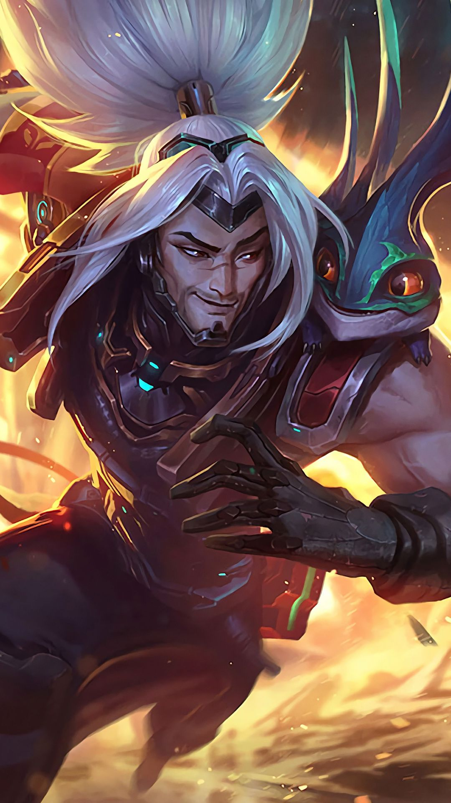

Yasuo

A gyermek Yasuo általában elhitte, amit a falubeliek mondtak róla: vagyis a jobb napokon azt, hogy a
létezése egy tévedésnek köszönhető, a rosszabbakon pedig azt, hogy ő egy végzetes, jóvátehetetlen hiba.
Mint minden fájdalmas dologban, ebben is volt igazság. Özvegy édesanyjának már volt egy fia, amikor Yasuo
későbbi édesapja őszi szélvészként berobbant az életébe. Azután, akárcsak az a magányos évszak, az ioniai
tél beállta előtt a férfi is elhagyta a kis családot.
Bár Yasuo idősebb féltestvére, Yone csupa olyasmit testesített meg – tisztelet, óvatosság, lelkiismeretesség
–, amivel Yasuo nem büszkélkedhetett, a két testvér elválaszthatatlan volt. Ha a többi gyerek csúfolta
Yasuót, Yone ott termett, hogy megvédje. Amit azonban Yasuo a türelem terén nélkülözött, azt eltökéltséggel
pótolta. Amikor Yone megkezdte karforgatói tanulóéveit a falu elismert harcművészeti iskolájában, az ifjú
Yasuo hűen követte, és odakint várt a monszunesőben, mígnem a tanárok megenyhültek, és kinyitották a kaput.
Új társai nagy bosszúságára Yasuo őstehetségnek bizonyult, olyannyira, hogy ő lett az egyetlen tanuló, aki
felkeltette a bölcs Souma, a legendás széltechnika utolsó tudójának figyelmét. Az öreg mester meglátta
Yasuóban a lehetőséget, azonban az impulzív tanuló visszautasította a tanítást, és továbbra is féktelen
maradt, mint egy forgószél. Yone arra kérte testvérét, vetkőzze le az arroganciáját, és egy juharfamagot
ajándékozott neki, vagyis az iskola tanítása szerint az alázat legfontosabb jelképét. Másnap reggel Yasuo
elfogadta a felkínált lehetőséget, így Souma tanítványa és személyi testőre lett.
Amikor a noxusi megszállás híre az iskolába is eljutott, a Navori tartománybeli Placidiumon történtek
sokakat fellelkesítettek, és a falu hamarosan az életerős ifjak kiontott vérét gyászolhatta. Yasuo szerette
volna kardját az ügy szolgálatába állítani, de míg az osztálytársai és a bátyja elmehettek harcolni, addig ő
azt a parancsot kapta, hogy maradjon otthon, és védelmezze a véneket.
Az invázió háborúvá fajult. Végül egy esős éjszakán a szomszéd völgyből visszhangoztak a noxusi harci dobok.
Yasuo elhagyta őrhelyét, mert balga módon azt hitte, megfordíthatja a harc kimenetelét.
Csatának azonban nyomát sem találta – csak noxusi és ioniai holttestek ezrei hevertek mindenfelé. Valami
borzalmas és természetellenes dolog történt azon a helyen, amit egyetlen penge sem lett volna képes
megállítani. Úgy tűnt, hogy még maga a föld is megfertőződött.
A kijózanodott Yasuo másnap tért vissza az iskolába, ahol a fennmaradó tanítványok kivont karddal vártak rá.
A bölcs Souma meghalt, és Yasuónak azzal kellett szembesülnie, hogy nem csupán kötelességei elmulasztásával
vádolják, hanem a gyilkosság elkövetésével is. Ráébredt, hogy ha nem cselekszik elég gyorsan, az igazi
gyilkos megússza tettét, ezért kiverekedte magát a többiek gyűrűjéből, bár tudta, hogy ezzel még inkább
alátámasztja látszólagos bűnösségét.
A számkivetett Yasuo a háború pusztítását nyögő Ionia vidékeit bejárva kutatott a nyomok után, amelyek
elvezethetik őt a gyilkoshoz. Mindeközben egykori szövetségesei folyamatosan vadásztak rá, így folyamatosan
az életéért kellett küzdenie. Kész volt megfizetni ezt az árat, ám egy nap megtörtént, amitől a legjobban
rettegett: saját testvére, Yone talált rá.
Mivel kötötte őket a becsület, egy darabig csak kerülgették egymást. Amikor végül összecsaptak, Yasuo
szélmágiája győzedelmeskedett Yone két pengéje felett, és kardjának egyetlen, villámgyors vágásával
leterítette a testvérét.
Yasuo bocsánatért esedezett, de Yone utolsó szavaival azt mondta, a bölcs Soumát a széltechnikával ölték
meg, amit pedig egyedül Yasuo ismerhetett. Ezután Yone meghalt, anélkül, hogy feloldozást adhatott volna.
Mestere és bátyja elvesztése után Yasuo olyan volt, mint egy hüvely nélküli kard. Zavarodottan járta a
hegyeket, a háború és a személyes veszteség okozta sebeket pedig alkohollal kúrálta. Ott, a hófödte vidéken
találkozott Taliyah-val, az ifjú shurimai kőmágussal, aki a noxusi hadseregből szökött meg. Valamilyen csoda
folytán Yasuo meglátta benne a potenciális tanítványt, magában pedig a tanárt. Megtanította őt az elemi
mágia megzabolázására, megismertette vele a szél kőformáló erejét, és a bölcs Souma tanításai végre
meghozták gyümölcsüket.
Egy shurimai isteni császár felemelkedéséről szóló híresztelés azonban mindent megváltoztatott. Yasuo és
Taliyah útjai elváltak, ő pedig, mivel már megtanulta a leckét, a lánynak ajándékozta a kincsként őrzött
juharfamagot. Míg Taliyah sivatagi otthonába tért vissza, Yasuo a saját faluja felé vette az irányt,
eltökélve, hogy mindent rendbe hoz, amit elrontott, és megtalálja egykori mestere valódi gyilkosát.
A tanácsterem kőfalai között arra derült fény, hogy a bölcs Souma halála baleset volt. Az elkövető, a Riven
néven ismert számkivetett noxusi pedig mélyen megbánta, amit tett. Ezzel együtt Yasuo továbbra is magát
hibáztatta, amiért úgy döntött, magára hagyja mesterét, és ezt az érzést csak súlyosbította a tény, hogy e
végzetes döntés végül Yone halálához vezetett.
Yasuo lezarándokolt Weh’lébe a Lélekvirág fesztiválra, bár nem fűzött nagy reményeket ahhoz, hogy a gyógyító
rituálék majd könnyítenek a szívén. Ott találkozott egy démoni teremtménnyel, aki fel akarta falni őt: egy
azakanával, amely fájdalommal és megbánással táplálkozik.
Ám egy álarcos alak közbelépett, és szent haraggal megölte a teremtményt. Yasuo felismerte az álarcost: Yone
volt az.
Yasuo arra számított, hogy Yone bosszút akar állni, és meglepődött, amikor testvére elengedte őt egy keserű
áldással.
Miután semmije sem maradt az Első honban, Yasuo új kalandra indult. Nem tudja, merre viszi az útja, de a
szél szabad szárnyát csak a bűntudata köti gúzsba.